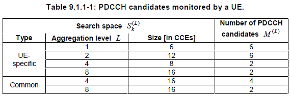

|
LTE Quick Reference Go Back To Index Home : www.sharetechnote.com |
|
|
PDCCH Candidate and Search Space
In the PDCCH region in DL radio frame, there can be many places where a specific PDCCH is located and UE searches all the possible locations. The possible location for a PDCCH differs depending on whether the PDCCH is UE-Specific or Common, and also depend on what aggregation level is used. All the possible location for PDCCH is called 'Search Space and each of the possible location is called 'PDCCH Candidates'.
The search space indicates the set of CCE locations where the UE may find its PDCCHs. Each PDCCH carries one DCI and is identified by RNTI. The RNTI is implicitly encoded in the CRC attachment of the DCI.
There are two types of search space : the common search space and the UE-specific search space. A UE is required to monitor both common and UE-specific search space. There might be overlap between common & UE-specific search spaces for a UE
The common search space would carry the DCIs for system information (using the SI-RNTI), paging (P-RNTI), PRACH responses (RA-RNTI), or UL TPC commands (TPC-PUCCH/PUSCH-RNTI). The UE monitors the common search space using aggregation level 4 and 8. The UE-specific search space can carry DCIs for UE-specific allocations using the UE's assigned C-RNTI, semi-persistent scheduling (SPS C-RNTI), or initial allocation (temporary C-RNTI). The UE monitors the UE-specific search space at all aggregation levels (1, 2, 4, and 8).
A table from 36.213 shows these relationship as below.

|